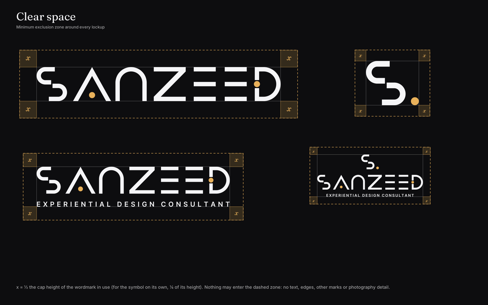

Clear space & placement.
x = half the cap height of the logo in use, on all sides. Nothing enters it: no text, no edge, no other logo, no photographic detail.
- 8.1Clear space
- 8.2Placement
Half the cap height, all round.
The clear-space sheet from 02_LOGO_SYSTEM/Guidelines, drawn for the primary wordmark, the horizontal-descriptor lockup, the vertical stack and the symbol.
The measure. x is half the height of the wordmark’s capitals in the lockup you are using. For the symbol on its own, x is a quarter of its height. For the stacked lockup, x is measured from the wordmark inside it.
What may not enter. Text, rules, edges of the page or screen, other logos, partner marks, photographic detail, pattern above 12 %.
What may. Flat brand colour, the lamp glow, the veil, grain. The glow in motion stays inside the clear space.
Margins. On documents the lockup sits at the 20 mm margin; the clear space is then automatically satisfied for a 56 mm lockup. On screens the nav wordmark at 18 px cap height carries 9 px of clear space built into its padding.

Top-left, or centred.
The placement sheet shows the approved positions on a document, a slide, a social post and a cover.
- Top-left or centred. The logo anchors a composition from the top-left (documents, website, social banners) or from the centre (covers, end cards, square tiles). Never bottom-right unless it is the sign-off on a cover, where it may sit bottom-left or centred with the lamp behind.
- Documents. The horizontal-descriptor lockup sits top-left at the 20 mm margin, 56 mm wide on A4; continuation pages carry the primary wordmark at 30 mm.
- Covers. The primary wordmark sits bottom-left or centred with the lamp glow behind it; the title sits above, never beside.
- Photography. The logo sits on the darkest third, under the veil, on ≥ 80 % black. Measure it; do not guess.
- With partners. Equal cap height, separated by a hairline with 2x between marks; Sanzeed’s mark first when host, last when guest.
- Signage. Centre line 1500 mm above finished floor for door plates; the wordmark centre 1700 mm on backdrops.